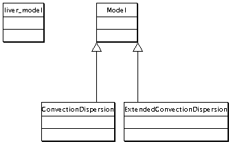
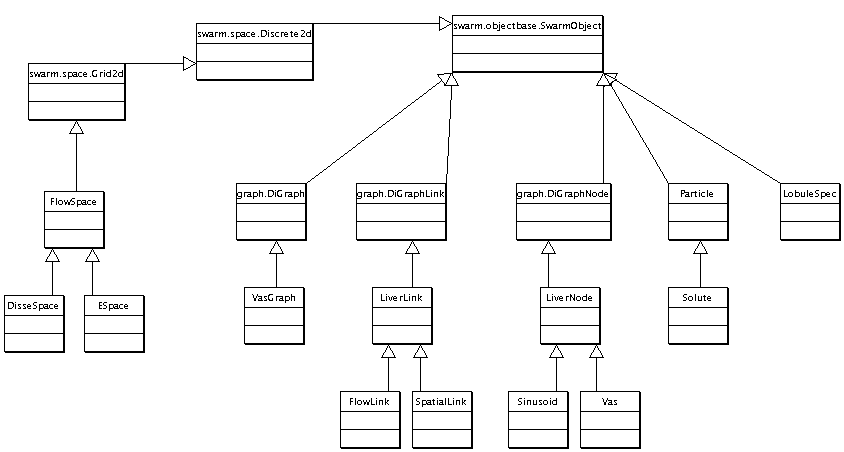

|
There is no software explicitly for FURM. FURM is amethod by which models are created. The only software associated with FURM so far is the code for the ISL models and the experimental apparatus in which they sit.
The In Silico Liver (ISL)
The ISL models a mammalian liver undergoing perfusion. It represents a liver as a large, concurrent collection of similar lobules, which are the functional units of the liver. Components mimic essential hepatic structure and behavior. Sinusoidal blood flow through the lobules is represented by a directed graph connecting Sinusoidal Segment (SS) nodes. There are many distinct flow paths from PORTAL VEIN TRACTS (PV) to CV. A SS is a discretized, tube-like structure comprised of a BLOOD "Core" wrapped by three 2D grids (Spaces A-C), which together simulate a 3D structure. SS geometry is specified with two pseudo-random distributions specifying their length and circumference to provide sufficient variety of COMPOUND travel paths. Compounds are represented using mobile objects that move through the LOBULE and interact with the various components of SSs. A typical COMPOUND maps to many drug molecules. A COMPOUND's behavior is determined by the physicochemical properties of its referent compound, along with the LOBULE and SS features it encounters. Multiple, different COMPOUNDs can percolate through the graph during the same experiment. Objects called CELLs (two types: ENDOTHELIAL CELLs and HEPATOCYTEs) represent an unspecified number of cells. CELLs contain objects and methods, including BINDERs and ENZYMEs, that interact with COMPOUND as it flows through an SS. ENZYMEs in HEPATOCYTEs contain a METABOLIZE function that destroys COMPOUND and creates METABOLITE, which can then flow out through the SS network or be collected in the BILE DUCT. The COMPOUND that flows out the CV is counted and used to validate against wet-lab perfusion data collected via a fraction collector.
More information on the ISL can be found here as well as in some of our published papers.
Downloads
Documentation
The only documentation we have so far is the content of our Technical Report and submitted papers, available in the Documents section.
However, below are some UML-ish diagrams that help explain the structure of the software. These diagrams have been purposefully simplified to get across the primary structure of the system.
Main Class Diagram
This is the class diagram for the experiment level of the ISL. This is the level at which experiments are set up, controlled, and logged.
Reference Model Inheritance Diagram
This shows the rather simple inheritance relationships used in the RefModel. The simplicity of this diagram is not really deceiving because this model really is just a simple mathematical function evaluated at each time step.

Articulated Model Inheritance
The ArtModel is clearly the most complicated component of the ISL. When looking at this and the subsequent constituents diagrams, refer to the description of the model on the ISL page.

Articulated Model Constituents
This diagram lists the classes whose objects participate in the evaluation of the ArtModel. It indicates run-time composition.
Model Utilities Inheritance
The model utilities are miscellaneous things we had to create to augment the Swarm framework to support the ISL. Other ABM packages have analogues to many of these components and when the ISL is ported to another platform, this package is expected to change accordingly.
Graph Package Inheritance
This is a modified version of a directed graph library contribution to Swarm. There are a number of changes we made to the API and we added some extra functionality. But, the structure is the same.
Local Random Constituents
These are a few random number distributions are provided in the global scope for use in the various models. They're "local" to the ISL and distinct from the default distributions provided by Swarm.
Notes
- The ISL is written using a combination of Objective-C and C++. Hence, the elements of these diagrams do not translate as directly as they would to Java.
- We are in the process of making several extensions to the model, including adding enzyme induction and elimination. So, these diagrams are already slightly out-of-date. But, there should be enough here to present the gist.
- The GML (Graph Modeling Language) class is just an abstraction allowing the ArtModel to read the directed graph of sinusoidal segments from a GML file. It's not clear that GML is the best format for this application; but, it is much more self-descriptive than a simple adjacency matrix and it can include visualization information. We intend to add visualization in the near future. In the meantime, we manipulate the graphs with tools like Tulip and GVF.
- We also have a lobule architecture specific parametrized way of specifying graphs called the LobuleSpec in the form of a matrix with the following structure:
| Zone I nodes | Zone II nodes | Zone III nodes |
| I->I edges | I->II edges | I->III edges |
| II->I edges | II->II edges | II->III edges |
| III->I edges | III->II edges | III->III edges |
Questions?
If you have any questions about the model or the software, contact Professor Hunt via the contact info on the Home page.
We also have a mailing list for the discussion of FURM-related projects, software, design goals, and all the peripheral subjects like tools, techniques, etc. If you would like to stay informed about FURM, subscribe to this mailing list by following the instructions at: http://tempusdictum.com/mailman/listinfo/furm
|